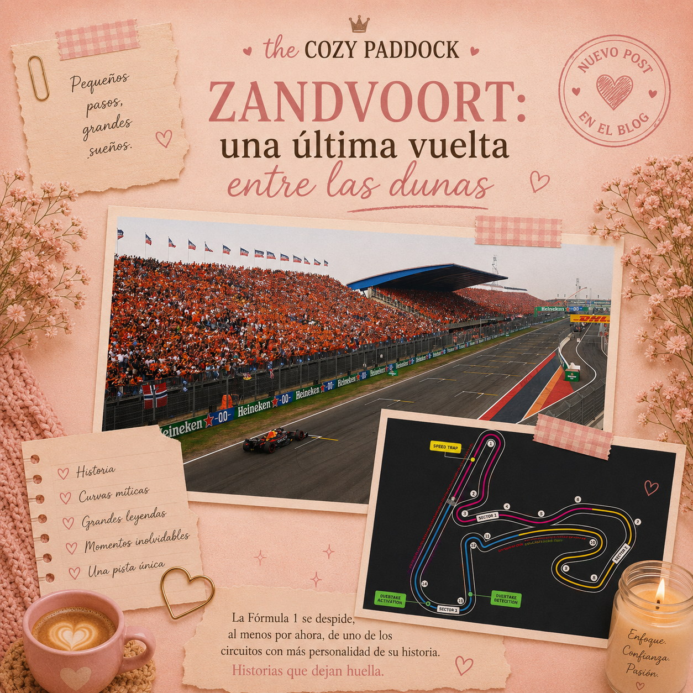

Zandvoort: una última vuelta entre las dunas
Hay circuitos que salen del calendario. Y hay circuitos que dejan una historia.
Zandvoort pertenece, sin duda, al segundo grupo.
Construido entre las dunas de la costa neerlandesa, con curvas peraltadas, grava esperando cualquier pequeño error y el Mar del Norte prácticamente al lado, nunca ha sido una pista convencional.
Durante los últimos años también se convirtió en la gran "marea naranja", con miles de aficionados llegando para apoyar a Max Verstappen. Pero la historia de Zandvoort comenzó mucho antes de Max y guarda capítulos que ayudan a entender por qué esta pista ocupa un lugar tan especial dentro de la Fórmula 1.
Ahora que se prepara para despedirse del campeonato, al menos por el momento, parece el momento perfecto para conocerlos.
Una pista nacida entre las dunas
La relación de Zandvoort con las carreras comenzó antes incluso de que existiera la Fórmula 1.
En 1939 ya se habían organizado competiciones utilizando las calles de la localidad, pero la historia de los caminos que posteriormente ayudarían a formar el circuito está ligada a los años de la Segunda Guerra Mundial.
Según la historia que ha acompañado al trazado durante décadas, durante la ocupación el alcalde Henri van Alphen impulsó la construcción de caminos entre las dunas presentándolos como rutas de transporte. Aquellos caminos terminarían formando parte de la base sobre la que, después de la guerra, se desarrollaría el circuito.
Finalmente, en agosto de 1948, Zandvoort celebró su primera gran carrera.
Y hasta ese primer ganador fue particular.
El triunfo quedó en manos del príncipe Birabongse Bhanudej Bhanubandh de Tailandia, conocido en el automovilismo simplemente como Príncipe Bira.
Años después, en 1952, el Gran Premio de los Países Bajos pasaría a formar parte del Campeonato Mundial de Fórmula 1.
Curvas con nombre propio
Una de las cosas que hacen especial a Zandvoort es que algunas de sus curvas tienen tanta personalidad como el propio circuito.
La primera es Tarzanbocht, la famosa horquilla situada al final de la recta principal.
Una de las historias populares sobre el origen de su nombre habla de un propietario local apodado "Tarzan", quien habría aceptado ceder parte de sus terrenos para la construcción del circuito con la condición de que una curva llevara su nombre.
Pero si algo llamó especialmente la atención cuando la Fórmula 1 regresó a Zandvoort en 2021 fueron sus peraltes.
La curva 3, Hugenholtzbocht, y la última curva, Arie Luyendykbocht, presentan inclinaciones extraordinarias que permiten a los pilotos utilizar diferentes líneas mientras mantienen velocidades muy altas.
Y visualmente son espectaculares.
Ver un Fórmula 1 inclinado sobre una de esas curvas mientras acelera hacia la recta principal es una de esas imágenes que difícilmente se confunden con otro circuito del calendario.
Una pista que todavía castiga los errores
Zandvoort también conserva algo que cada vez encontramos menos en los circuitos modernos: muy poco espacio para equivocarse.
Aquí no abundan las enormes escapatorias de asfalto.
Hay grava.
Y mucha.
Salirse de la trazada ideal puede significar perder varias posiciones, quedar atrapado o terminar directamente contra las barreras.
A eso se suma una característica imposible de controlar: el lugar donde está construido.
El circuito se encuentra literalmente entre las dunas de la costa del Mar del Norte, por lo que el viento y la arena pueden modificar las condiciones de la pista durante el fin de semana.
Con apenas 4,259 kilómetros y 72 vueltas de carrera, además, todo ocurre muy rápido.
Es estrecho, técnico, corto y exigente.
Exactamente lo que esperaríamos de un circuito de vieja escuela.
Jim Clark, el rey de Zandvoort
Mucho antes de que las tribunas se pintaran de naranja por Max Verstappen, otro piloto había construido una relación especial con esta pista.
Jim Clark.
El escocés consiguió cuatro victorias en el Gran Premio de los Países Bajos entre 1963 y 1967, convirtiéndose en el piloto con más triunfos en Zandvoort durante su etapa clásica.
Pero no sería el único campeón cuya historia quedaría ligada para siempre a estas dunas.
El día en que James Hunt desafió a los gigantes
En 1975, Zandvoort fue escenario de una de esas historias que explican por qué amamos tanto este deporte.
James Hunt todavía no era campeón del mundo.
Y Hesketh Racing estaba muy lejos de tener los recursos de los grandes equipos.
La carrera comenzó con condiciones cambiantes y una pista complicada. Hunt y su equipo arriesgaron con el momento de cambiar a neumáticos de seco y la decisión terminó colocándolo en una posición inesperada: luchando por la victoria.
Detrás venía Niki Lauda con Ferrari.
Hunt resistió.
Y ganó.
Fue su primera victoria en Fórmula 1 y el único triunfo de Hesketh, convirtiendo aquel domingo en una de las grandes historias de un equipo pequeño derrotando a uno de los gigantes.
Gilles Villeneuve y una época completamente diferente
Cuatro años después, Gilles Villeneuve protagonizó otro de los momentos inolvidables de Zandvoort.
Durante la carrera de 1979 sufrió un problema en uno de sus neumáticos que terminó dañando gravemente su Ferrari.
Para cualquier piloto moderno, aquello habría significado el final inmediato de la carrera.
Villeneuve tenía otros planes.
Consiguió sacar el coche y continuó intentando regresar a boxes con el Ferrari prácticamente sobre tres ruedas y partes del monoplaza arrastrándose contra el asfalto.
Finalmente tuvo que abandonar.
Hoy aquella escena resulta casi inconcebible, pero también funciona como una fotografía perfecta de una Fórmula 1 muy distinta a la actual.
Una tragedia que también dejó una lección
No toda la historia de Zandvoort está formada por victorias y momentos espectaculares.
El circuito también guarda uno de los capítulos más dolorosos de la Fórmula 1.
Durante el Gran Premio de 1973, Roger Williamson sufrió un accidente y su monoplaza terminó volcado y envuelto en llamas.
David Purley, amigo de Williamson y también participante de la carrera, detuvo su propio coche y corrió hacia el accidente para intentar ayudarlo.
Intentó desesperadamente voltear el monoplaza mientras pedía ayuda, pero Williamson no pudo ser rescatado.
Más allá de la tragedia, aquel momento expuso de una manera brutal las enormes deficiencias que todavía existían en los procedimientos de emergencia del automovilismo de aquella época.
La Fórmula 1 que vemos hoy es considerablemente más segura porque, durante décadas, el deporte tuvo que aprender de episodios como aquel.
Recordarlo no debería tratarse de revivir una tragedia, sino de comprender cuánto ha cambiado la seguridad desde entonces.
El último baile de Niki Lauda
En 1985 llegó otra despedida.
Zandvoort atravesaba problemas financieros y aquel Gran Premio terminaría siendo el último antes de desaparecer del calendario durante décadas.
Niki Lauda llegaba también al tramo final de su carrera.
El austríaco consiguió contener a su compañero Alain Prost y cruzó la meta como ganador.
Nadie podía saberlo entonces, pero aquella sería la última victoria de Niki Lauda en Fórmula 1.
Meses después se retiraría como piloto.
Zandvoort, por su parte, desaparecería del campeonato después de aquella edición y no regresaría hasta 2021.
Treinta y seis años después.
Y entonces llegó la marea naranja
Cuando Zandvoort volvió al calendario en 2021, regresó a una Fórmula 1 completamente diferente.
El circuito fue actualizado, aparecieron sus espectaculares peraltes y las tribunas se transformaron en un enorme mar naranja.
Max Verstappen convirtió su carrera de casa en uno de los fines de semana más reconocibles de la temporada.
Pero quizás uno de los mayores logros de esta segunda etapa de Zandvoort fue demostrar que un circuito antiguo todavía podía tener espacio dentro de la Fórmula 1 moderna.
No necesitaba convertirse en otra cosa.
Seguía siendo estrecho.
Seguía teniendo grava.
Seguía viviendo entre las dunas.
Seguía siendo Zandvoort.
Una última vuelta
Y ahora volvemos a despedirnos.
Tal vez esa sea la palabra que mejor describe la relación de Zandvoort con la Fórmula 1: regresar.
Fue escenario de algunas de las primeras décadas del campeonato.
Desapareció.
Regresó treinta y seis años después.
Y ahora vuelve a prepararse para dejar el calendario.
No sabemos si será para siempre.
Por eso, este fin de semana quizá valga la pena mirar un poco más allá del resultado.
Mirar las curvas.
La grava.
Los peraltes.
Las dunas.
La marea naranja.
Porque cuando los coches crucen la meta y caiga la última bandera a cuadros, no estaremos despidiendo simplemente otro Gran Premio.
Estaremos cerrando otro capítulo de una pista que lleva más de siete décadas encontrando la manera de regresar.
Una última vuelta entre las dunas.
About The Cozy Paddock
The Cozy Paddock es un espacio donde la Fórmula 1 se vive desde una perspectiva más suave y femenina.
Creado para chicas que quieren entender, disfrutar y experimentar el deporte de una forma simple, acogedora y bonita.
The Cozy Paddock is a space where Formula 1 meets a softer, more feminine perspective.
Created for girls who want to understand, enjoy, and experience the sport in a simple, cozy, and beautiful way.
Autoras

Mery Ramirez

Sheyla Franco

Mayra Torreblanca